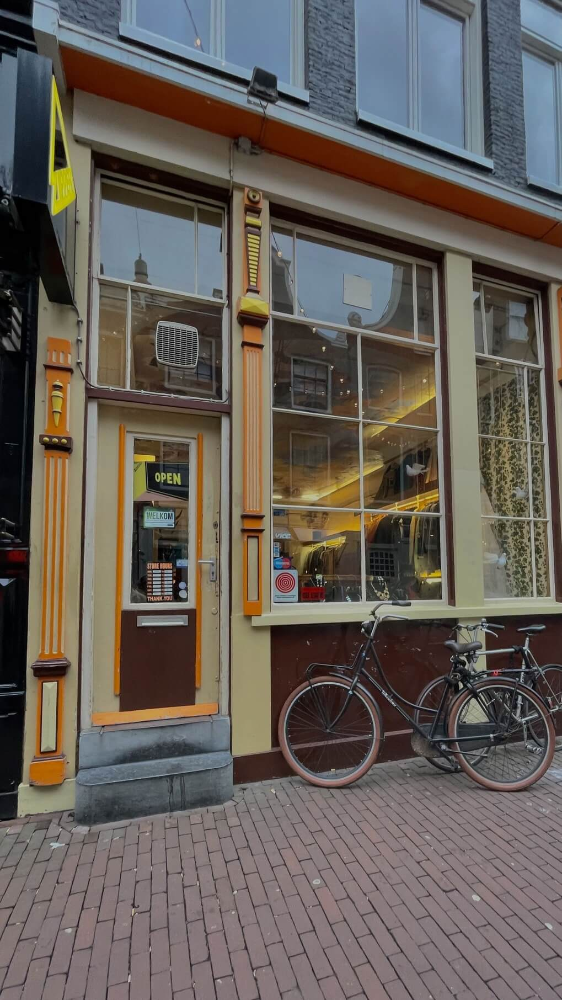

Vintage, Jouw Unieke Touch
Welkom! Hier kan je meer informatie vinden over de vintage store Zipper, je kan hier ook inspiratie zoeken en meer leren over duurzaamheid :) Iedereen is welkom op dit website, het is nooit te laat om met vintage te beginnen. Wil je leuke tweedehands of vintage kleren ? Kom dan snel langs ! Ze hebben twee winkels in Amsterdam, eentje ligt naast centraal (Haarlemmerstraat) en de ander naast Rokin (Huidenstraat).